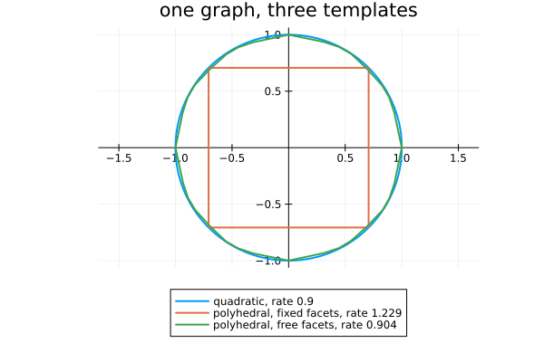
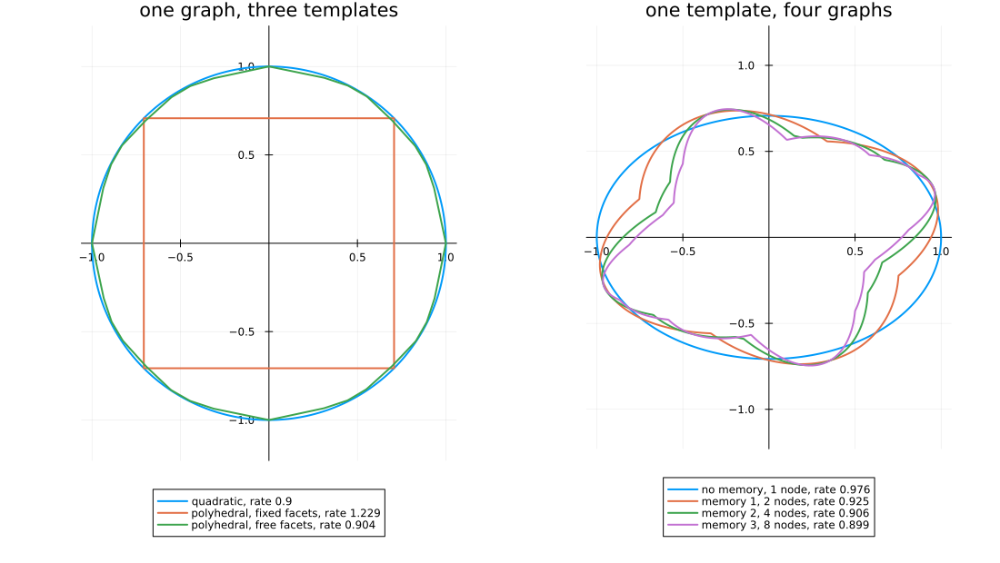

Templates and graphs: the two axes
This example changes the template on a fixed graph, then the graph for a fixed template, and finally compares sum-of-squares node functions of degree 4 with quadratic ones.
Each panel shows the sublevel set $\{x : V(x) \le 1\}$ of the common function $V$, evaluated by calling the certificate on $x$.
import PathCompleteCertificates as PCC
import Clarabel
using HybridSystems
using SumOfSquares, DynamicPolynomials
using Plots
const OPTIMIZER = Clarabel.OptimizerClarabel.MOIwrapper.OptimizerEvery node function is homogeneous of degree $p$ = homogeneity_degree, and so is the common function built from them, so the radius of the sublevel set in direction $u$ is $V(u)^{-1/p}$.
function sublevel_boundary(certificate; samples = 721)
degree = PCC.homogeneity_degree(PCC.template(certificate))
angles = range(0, 2pi; length = samples)
radii = [certificate([cos(a), sin(a)])^(-1 / degree) for a in angles]
radii ./= maximum(radii)
return radii .* cos.(angles), radii .* sin.(angles)
endsublevel_boundary (generic function with 1 method)A certificate is determined up to scale, and each template pins that scale differently, so the sets are drawn normalised to maximal radius 1. The rate of each certificate is in the legend.
One graph, three templates
One mode, a rotation scaled by 0.9, on a single self-loop. Its joint spectral radius is 0.9. The quadratic template certifies it exactly, since the rotation maps circles to circles; the polyhedral template with fixed facets certifies a larger rate, and the one with free facets a rate closer to 0.9.
THETA = pi / 3
ROTATION = [0.9 * [cos(THETA) -sin(THETA); sin(THETA) cos(THETA)]]
rotation_graph = PCC.de_bruijn(1, 1)
rotation_problem = PCC.StabilityProblem(PCC.switched_system(ROTATION))
templates = [
("quadratic", PCC.QuadraticTemplate()),
("polyhedral, fixed facets", PCC.ParallelFacesPolyhedralTemplate(1, 2)),
(
"polyhedral, free facets",
PCC.ConicPolyhedralTemplate([PCC.planar_conic_partition(3)]),
),
]
left = plot(;
title = "one graph, three templates",
aspect_ratio = :equal,
legend = :outerbottom,
framestyle = :origin,
)
for (name, template) in templates
certificate = PCC.jsr_bound(
template,
rotation_graph,
rotation_problem;
optimizer = OPTIMIZER,
rtol = 1e-4,
)
xs, ys = sublevel_boundary(certificate)
plot!(
left,
xs,
ys;
label = "$name, rate $(round(certificate.rate; digits = 3))",
lw = 2,
)
end
left
One template, four graphs
A rotation and a shear, with quadratic node functions, on the one-node graph and on the De Bruijn graphs of order $k = 1, 2, 3$, whose nodes record the last $k$ modes. The common function is a minimum of the node functions ((Philippe et al., 2019)), so its sublevel sets are unions of ellipses and need not be convex.
MIXED = [0.69 * [0.0 1.0; -1.0 0.0], 0.69 * [1.0 1.0; 0.0 1.0]]
mixed_problem = PCC.StabilityProblem(PCC.switched_system(MIXED))
graphs = [("no memory", PCC.common_graph(mixed_problem.system))]
for order in 1:3
push!(graphs, ("memory $order", PCC.de_bruijn(order, 2)))
end
right = plot(;
title = "one template, four graphs",
aspect_ratio = :equal,
legend = :outerbottom,
framestyle = :origin,
)
for (name, graph) in graphs
certificate = PCC.jsr_bound(
PCC.QuadraticTemplate(),
graph,
mixed_problem;
optimizer = OPTIMIZER,
rtol = 1e-4,
)
n = PCC.n_nodes(graph)
xs, ys = sublevel_boundary(certificate)
plot!(
right,
xs,
ys;
label = "$name, $n node$(n == 1 ? "" : "s"), rate $(round(certificate.rate; digits = 3))",
lw = 2,
)
end
plot(left, right; layout = (1, 2), size = (1100, 620))
On the right the rate does not increase with the order $k$. The sets are not nested, since each is normalised.
Sums of squares
SumOfSquaresTemplate takes polynomial node functions of higher degree ((Parrilo and Jadbabaie, 2008)). Load SumOfSquares before constructing it. The polynomial variables are created once and shared by every node. Degree 2 is the quadratic template. The table gives the rates of degrees 2 and 4 on one node and on de_bruijn(1, 2).
@polyvar x[1:2]
bound(template, graph) =
PCC.jsr_bound(template, graph, mixed_problem; optimizer = OPTIMIZER, rtol = 1e-4).rate
one_node = PCC.common_graph(mixed_problem.system)
two_nodes = PCC.de_bruijn(1, 2)
[
("quadratic, 1 node", bound(PCC.QuadraticTemplate(), one_node)),
("degree 4, 1 node", bound(PCC.SumOfSquaresTemplate(2, x), one_node)),
("quadratic, 2 nodes", bound(PCC.QuadraticTemplate(), two_nodes)),
("degree 4, 2 nodes", bound(PCC.SumOfSquaresTemplate(2, x), two_nodes)),
]4-element Vector{Tuple{String, Float64}}:
("quadratic, 1 node", 0.975830078125)
("degree 4, 1 node", 0.9122314453125)
("quadratic, 2 nodes", 0.92462158203125)
("degree 4, 2 nodes", 0.90118408203125)This page was generated using Literate.jl.